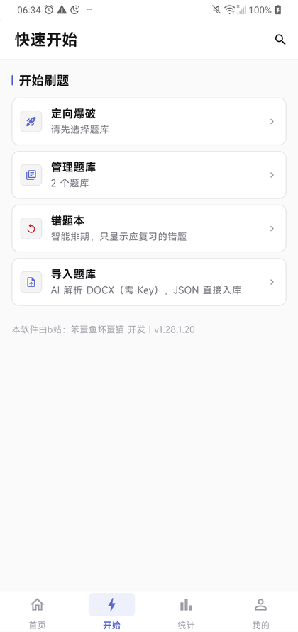
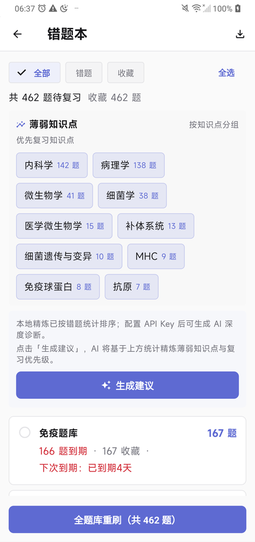
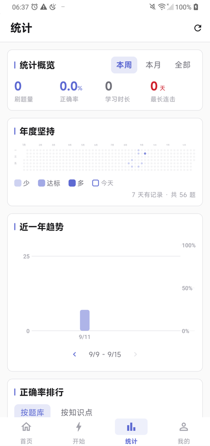

从自己的资料开始。
不必在文档、笔记和错题本之间来回切换。每一次思考，都有地方留下来。
带进来
JSON 直接导入；DOCX / PDF 交给你配置的 AI 解析，逐题校对后再入库。
想明白
刷题、练习、背题三种模式；需要时逐题看 AI 讲解，结合上下文继续追问。
一题一屏，答完再看讲解。
再回看
按作答表现安排错题复习；按知识点看薄弱处，把批注留在题目旁边。
按作答表现排期 · 复习不是盲目重刷
不常提，但一直在。
下面这些都已在当前版本里。不用装插件，也不用额外开会员。
打开以后，事情很清楚。
从选题库到回看错题，把注意力留给真正要学的东西。

定向爆破 · 管理题库 · 错题本 · 导入题库

智能排期 · 按知识点分组的薄弱清单

年度热力图 · 趋势 · 正确率排行
界面截图按印刷规范去色，实际界面为浅色主题。数据仅作展示，具体以安装版本为准。
学习资产，应该在你自己手里。
资料已经有了，
不该再被会员和账号拦住。
猫卷希望把建题库、刷题和复习的主动权还给学习的人。无账号、无广告、无会员；题库与记录优先保存在本地，支持备份迁移与局域网同步。
AI 是可选的工具，不是进入学习的门票。你选择模型与服务商，用自己的 Key；基础刷题、错题复习和统计无需 AI。
看看开源代码小步改进，认真做题。
依据更新日志与提交记录整理。开发进展与已发布版本分开看。
开发进展与已发布版本分开看：仓库可能比安装包更新。
先把话说清楚。
安装包、Key 与数据边界，都在这里。
Q-01 没有 API Key，可以用吗？
可以。JSON 和内置示例题库无需 Key。刷题、错题复习、手写批注与本地统计也无需 Key。DOCX / PDF 解析及 AI 讲解、追问需联网并配置 Key。
Q-02 免费使用，包括 AI 费用吗？
App 免费，不收会员费。AI 服务由你选择的服务商提供，可能按其定价产生费用，猫卷不承担模型调用费用。
Q-03 学习数据会发送出去吗？
核心记录默认保存在设备本地。使用 AI 时，相关题目和认证信息会发给你配置的服务商。局域网同步不经过云端。
Q-04 PDF 和间隔复习有哪些边界？
PDF 与 DOCX 一样，需先配置 Key 才能解析（JSON 与内置示例题库不需要）；无文字层的扫描件在 Android 上走端上离线 OCR，不需要联网、也不占 API 额度；Windows 上改走在线多模态视觉切题，需要联网并消耗 API 额度。错题排期采用 FSRS-5 简化实现，不承诺记忆率或考试结果。